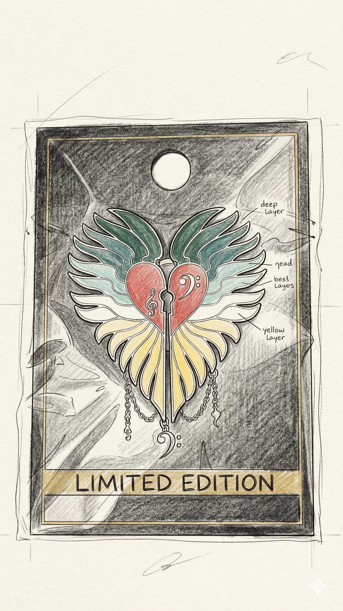

闡述設計理念匯報
⭐ 通利琴行 (匯報示範) ⭐
點擊查看完整匯報結構與語音示範

選擇紀念品草圖 (主題練習)
🌟 自由創作模板 (上傳專屬草圖) 🌟
🎨
全新自由設計
不限主題，可於每一頁自由上傳圖片
通利琴行：宣傳紀念品設計 (匯報示範)
請依次點擊下方步驟，從思考問題開始，逐步建構你的匯報內容。點擊「組織內容」內的喇叭按鈕可聆聽普通話示範。
🖼️ 簡報視覺排版參考 (V1 - V10)
(左右滑動瀏覽，點擊圖片可全螢幕放大)
請依照步驟，填寫你的匯報內容：
🗣️ 匯報通用語句
(可參考以下語句來起頭或連接你的段落)
🖼️ 示範 PPT 視覺參考 (滑動瀏覽，點擊可放大)
🎉 你的專屬設計匯報簡報已完成 🎉
提示：輸出 PDF 後，可使用線上工具 (如 iLovePDF) 將滿版的 PDF 完美轉換為 PPT 檔案。